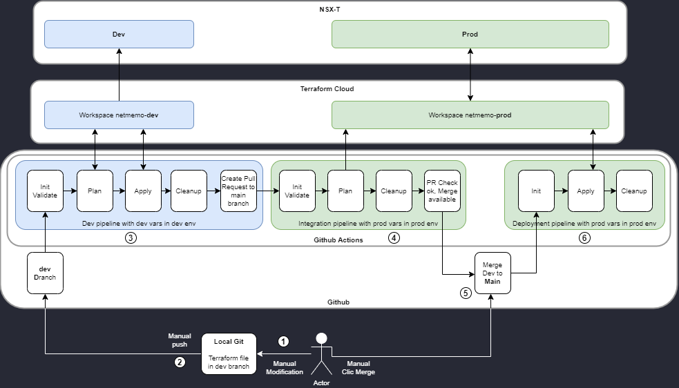
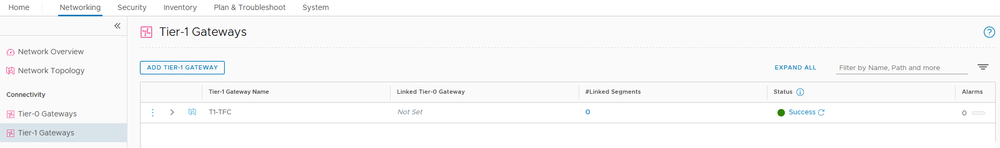

This post is to show an example of using CI/CD with Terraform Cloud and Github Actions in order to have a better NetDevOps approach by doing NSX-T Network Infrastructure as code (IaC). It’s almost a bingo, I think I have most of the buzz words of these last years :)
I will describe the structure of the project, the project components, the project workflow and finish with how to test this project.
Structure of the project
The diagram below shows a high level view of the project. 
{kind=link}
You can find the file structure of the project below
.
├─ main.tf
├─ .github
   └── workflows
       ├── dev-to-pr.yml
       ├── plan-prod.yml
       └── apply-prod.yml
Project components
NSX-T
For this project we need two NSXT environments, one for production and one for development. You can either have 2 full blown NSX-T or use different variables for prod and dev or different VRFs. In this blog post we will use two different deployments.
Terraform Cloud
Terraform Cloud will be used to store the state of the prod and dev environment. It will also allow to manage Terraform through APIs. For the project we need to create 2 differents workspaces, one for production and one for developments. The name of the workspaces should be prefix-suffix where the prefix will be what is configured in your terraform configuration file and the sufix will be what is used to select the workspace. We will cover how to select the workspace later in that post. For this blog post, the prefix will be netmemo- and the suffix will be either prod or dev.
{kind=link}
Once the workspaces are created, we need to add 3 variables for the NSX-T provider:
{kind=link}
Finally we need to add the API key that Github Actions will use to connect to Terraform Cloud
{kind=link}
Github
Github is where we will store the configuration and execute our CI/CD pipelines. Once the project is forked, to make it works, we need to enable Github Actions.
{kind=link}
Create a github personal access token REPO_TOKEN. This token will be used by Github Actions to automatically create the pull request.
{kind=link}
Add the previously created token (TF_API_TOKEN and REPO_TOKEN_SECRET) to your github repository secrets.
{kind=link}
Github Actions
This project is made from 3 scripts that form 3 pipelines. The first script will handle the dev environment. The second will handle the terraform plan for the prod environments. The third will handle the terraform apply for the prod environment.
You can find an explanation of the main steps on the below site Github Actions.
dev-to-pr.yml
The dev-to-pr.yml Github Actions YAML file will be executed only after a push on the dev branch.
on:
push:
branches:
- dev
The first step is to checkout the current configuration.
- name: Checkout
uses: actions/checkout@v2
Then the Setup Terraform steps retrieves the Terraform CLI used in the GitHub action workflow. This is in this step that we will use the TF_API_TOKEN that we have created previously to access Terraform Cloud from Github Actions.
- name: Setup Terraform
uses: hashicorp/setup-terraform@v1
with:
# terraform_version: 0.13.0:
cli_config_credentials_token: ${{ secrets.TF_API_TOKEN }}
These following steps initialize Terraform and set the terraform workspace.
- name: Terraform Init
id: init
run: terraform init
env:
TF_WORKSPACE: "dev"
- name: Terraform Workspace
id: workspace
run: terraform workspace select dev
We then validate the Terraform configuration
- name: Terraform Validate
id: validate
run: terraform validate -no-color
This step is to execute the Terraform plan. The plan will be a speculative plan executed in Terraform Cloud. Speculative plans are not directly visible from the Terraform Cloud UI. To access it, you will need to click on the link given in the result of the Terraform plan command.
- name: Terraform Plan
id: plan
run: terraform plan -no-color
continue-on-error: true
This step will execute a github-script that will send a REST API query thanks to the github pre-authenticated octokit/rest.js client with pagination plugins. It will also create a comment on the commit with the result of the previous steps.
- uses: actions/github-script@0.9.0
if: github.event_name == 'push'
env:
PLAN: "terraform\n${{ steps.plan.outputs.stdout }}"
with:
github-token: ${{ secrets.GITHUB_TOKEN }}
script: |
const output = `#### Terraform Format and Style [36;63H\`${{ steps.fmt.outcome }}\`
#### Terraform Initialization ⚙️\`${{ steps.init.outcome }}\`
#### Terraform Validation [36;41H\`${{ steps.validate.outcome }}\`
#### Terraform Plan [36;35H\`${{ steps.plan.outcome }}\`
<details><summary>Show Plan</summary>
\`\`\`\n
${process.env.PLAN}
\`\`\`
</details>
*Pusher: @${{ github.actor }}, Action: \`${{ github.event_name }}\`*`;
github.repos.createCommitComment({
owner: context.repo.owner,
repo: context.repo.repo,
commit_sha: context.sha,
body: output
})
This step is to apply the Terraform configuration, only if the terraform plan step result has succeeded.
- name: Terraform Apply
id: apply
if: steps.plan.outcome == 'success'
run: terraform apply -auto-approve
If the terraform apply succeeds, we will use the github-script to create a Pull Request thanks to the octokit/rest.js like in the previous steps. We will use a personal github token PERSO_GITHUB_TOKEN to create the PR for these steps. If we are not using the personal token, the PR will not trigger other pipelines that have the on:pull_request trigger.
- name: CreatePR if apply succeed
uses: actions/github-script@v4.0.2
if: steps.apply.outcome == 'success'
with:
github-token: ${{ secrets.PERSO_GITHUB_TOKEN }}
script: |
github.pulls.create({
owner: context.repo.owner,
repo: context.repo.repo,
title: "Auto PR",
head: "dev",
base: "main"
});
plan-prod.yml
The plan-prod.yml Github Actions YAML file will be executed only after a pull request.
on:
pull_request:
Most of the steps have already been described for the dev-to-pr.yml files, the only difference is the step below. It will add a comment on the PR with the description of what has been done.
- uses: actions/github-script@v4.0.2
env:
PLAN: "terraform\n${{ steps.plan.outputs.stdout }}"
with:
github-token: ${{ secrets.GITHUB_TOKEN }}
script: |
const output = `#### Terraform Initialization ⚙️\`${{ steps.init.outcome }}\`
#### Terraform Validation [36;41H\`${{ steps.validate.outcome }}\`
#### Terraform Plan [36;35H\`${{ steps.plan.outcome }}\`
<details><summary>Show Plan</summary>
\`\`\`\n
${process.env.PLAN}
\`\`\`
</details>
*Pusher: @${{ github.actor }}, Action: \`${{ github.event_name }}\`*`;
github.issues.createComment({
issue_number: context.issue.number,
owner: context.repo.owner,
repo: context.repo.repo,
body: output
})
apply-prod.yml
The plan-prod.yml Github Actions YAML file will be executed only after a push on the main branch.
on:
push:
branches:
- main
The other steps have already been discussed previously.
Terraform file
For this blog post we will have a single main.tf file. This Terraform script should have the terraform configuration, the provider definition and the resources definitions.
Terraform variables
This is where we declare the Terraform variables that will be defined in the Terrafrom Cloud workspaces. These variables will change according to the environment.
variable "password" {
type = string
}
variable "username" {
type = string
}
variable "nsxhost" {
type = string
}
Terraform configuration section
In this section we are setting the 2 providers needed and the backend. The backend “remote“ is where you find the Terraform Cloud organization and workspaces prefixes. The workspaces suffixes will be added as seen in the beginning of this post with the TF_WORKSPACE environment variables and the terraform workspace select command in the Github Actions steps.
terraform {
required_providers {
random = {
source = "hashicorp/random"
version = "3.0.1"
}
nsxt = {
source = "vmware/nsxt"
version = ">= 3.1.1"
}
}
backend "remote" {
organization = "netmemo"
workspaces {
prefix = "netmemo-"
}
}
}
Provider configuration
This is the NSX-T provider configuration. We pass the 3 variables that are defined in the Terraform Cloud workspaces. We disable the SSL verification because this is a local lab.
provider "nsxt" {
host = var.nsxhost
username = var.username
password = var.password
allow_unverified_ssl = true
}
Resource creation
For this blog post we will create a NSX-T T1 gateway name T1-TFC.
resource "nsxt_policy_tier1_gateway" "tier1_gw" {
description = "Tier-1 provisioned by Terraform"
display_name = "T1-TFC"
route_advertisement_types = ["TIER1_CONNECTED"]
}
Project workflow
Clic the arrows to see the detail.
1. Modify the dev branch on you local git.
2. Add the modif to git, commit them and push the dev branch to your github repo.
git add .
git commit -am "add T1-GW"
[dev a0b946b] add T1-GW
2 files changed, 6 insertions(+), 6 deletions(-)
git push
Counting objects: 6, done.
Delta compression using up to 2 threads.
Compressing objects: 100% (5/5), done.
Writing objects: 100% (6/6), 617 bytes | 617.00 KiB/s, done.
Total 6 (delta 2), reused 0 (delta 0)
remote: Resolving deltas: 100% (2/2), completed with 2 local objects.
To ssh://github.com/netmemo/tf-gha-nsxt-cicd.git
8534543..a0b946b dev -> dev
3. Dev pipeline
The dev pipeline is triggered, you can see it’s starting in the Actions tab. It’s tittle will be the commit message.
To validate that the dev pipeline is completed, you can check the Terraform cloud dev workspace state and the NSX-T dev environment to see that there is a new T1-GW.
4. Integration pipeline
After all the steps in the dev pipeline are passed, the workflow will turn green. The last step of the pipeline will create an automatic PR that will trigger the integration pipeline. This pipeline will validate the configuration and creates a plan against the production environment.
The PR will have the description “Auto PR generate by Github Action dev pipeline”
The integration pipeline will execute the terraform plan command against the production environment. You can then check again the Actions tab to see that the development and integration pipeline has turned green.
If the two pipelines are ok, the checks in the PR should be green.
5. Merge
When the dev and integration pipeline are finished, the dev branch is ready to be merged to the main branch. You can then clic on the Merge pull request button to validate the merge and trigger the deployment pipeline.

6. Deployment pipeline
The deployment pipeline is triggered with the push/merge to the main branch. This is the final workflow that will push the Terraform configuration to production. You can see in Terraform Cloud that Terraform is applying the configuration.
You can now double check in Github Actions that the deployment workflow has been succefully executed, “Merge pull request #10” in the picture below.
7. Checks
Finally you can now verify that there is a resource on Terraform Cloud and that the T1 Gateway has been created on the production NSX-T.

{kind=link}
{kind=link}
{kind=link}
{kind=link}
{kind=link}
{kind=link}
{kind=link}
{kind=link}
{kind=link}
{kind=link}
How to test this project.
Requirements:
- NSX-T environment (there are examples on the web to use AWS as provider instead of NSX, the concepts are the same).
- Terraform Cloud account with 2 workspaces.
- Github account and git locally.
- [NSX-T] Prepare your two NSX-T environments.
- [TFC] Create your two workspaces in TFC with the API Key for Github.
- [GITHUB] Fork this project, add the TFC API key and your personal API Key to your repo, enable actions.
- [LOCAL] Clone your forked project to your local git.
- [LOCAL] Create the dev branch locally.
- [LOCAL] Modify the Terraform configuration in the main.tf according to your TFC workspace.
- [LOCAL] Add to git, commit, push.
- [GITHUB] Wait until all the test pass.
- [GITHUB] Click merge to deploy to prod.
Pain points of the project.
- Switching terraform workspace with github actions.
- Create automatically a github PR with with rest.js API of octokit.